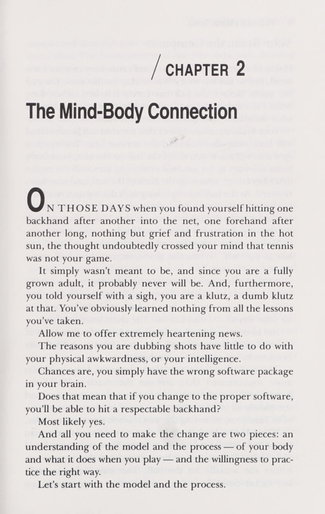
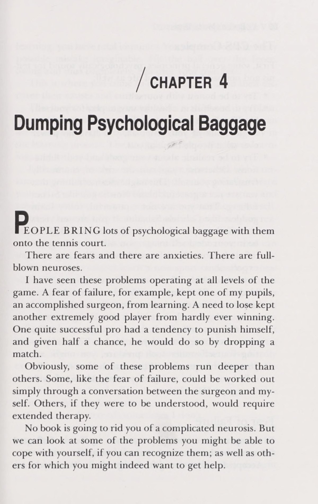
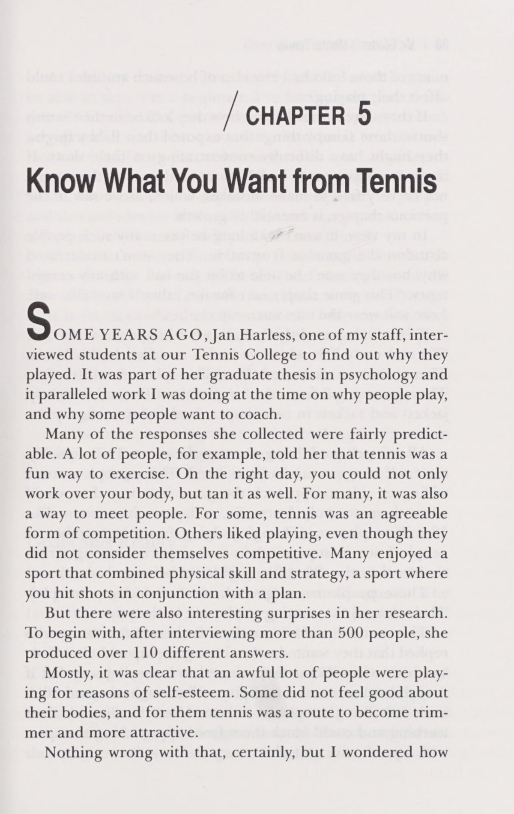
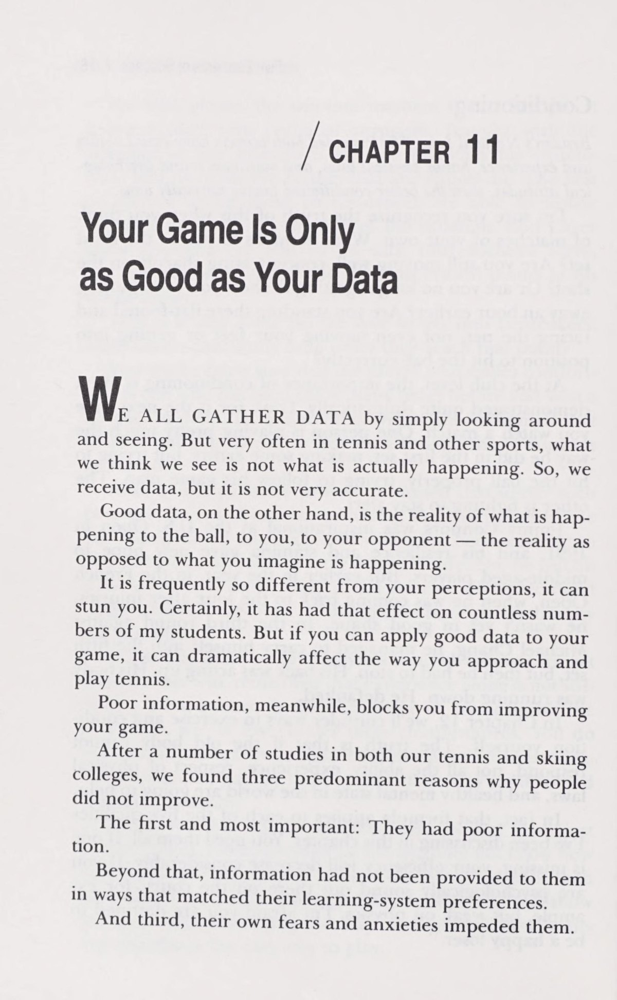
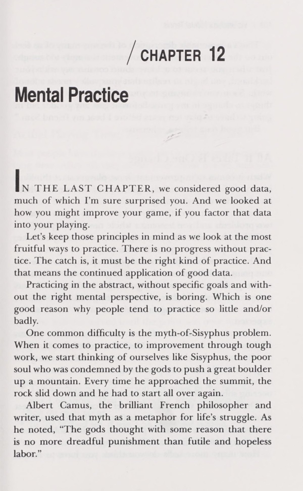

Phần I: Kết Nối Tâm - Thân & Bốn Khái Niệm Cốt Lõi
Bản chất thần kinh học của quần vợt, phần mềm não bộ, chuỗi truyền động cơ bắp và nguyên nhân gây lỗi kỹ thuật
1. Lời Mở Đầu: Bốn Khái Niệm Nền Tảng Của Tâm Lý Học Quần Vợt
Người ta vẫn thường nói với tôi rằng: "Quần vợt là một trò chơi tâm lý." Với tư cách vừa là một huấn luyện viên quần vợt quốc tế vừa là một nhà tâm lý học có chứng chỉ hành nghề, tôi hoàn toàn đồng ý với nhận định đó.
Thế nhưng, tôi nhận thấy nhiều người chơi hiểu sai hoàn toàn ý nghĩa của câu nói này. Họ thường nghĩ rằng: "Giá như tôi làm chủ được khía cạnh tâm lý thì dù kỹ thuật của tôi có tệ hại đến đâu tôi vẫn có thể chiến thắng." Nếu bạn mua cuốn sách này với suy nghĩ đó, bạn đang lầm tưởng. Tâm lý học không thể thay thế cho các quy luật sinh cơ học chuẩn mực.
Đối với tôi, tâm lý học quần vợt bao hàm bốn khái niệm cốt lõi:
Thứ nhất, thấu hiểu mối quan hệ tương hỗ giữa bộ não và cơ thể (Mind-Body Connection): cách bộ não như một chiếc máy tính phát lệnh, truyền tín hiệu qua các nơ-ron đến cơ bắp và mã hóa phần mềm vận động cho từng cú đánh.
Thứ hai, nhận diện và rũ bỏ các chướng ngại tâm lý vô thức tích tụ từ quá khứ.
Thứ ba, thiết lập những mục tiêu tập luyện thực tế và lành mạnh.
Thứ tư, làm chủ các kỹ thuật tâm lý chiến trên sân thi đấu thực tế. Khi kết hợp hài hòa bốn yếu tố này, bạn sẽ mở khóa được tiềm năng thể thao tối đa của chính mình.
2. Kết Nối Tâm - Thân: Bộ Não Là Máy Tính Chủ, Cơ Bắp Là Thiết Bị Đầu Cuối
Vào những ngày bạn liên tục đánh bóng rúc lưới hoặc vung vợt đưa bóng bay xa ra ngoài sân trong nỗi thất vọng tột cùng, bạn có thể tự nhủ rằng mình không có năng khiếu chơi tennis. Đó là một kết luận hoàn toàn sai lầm.
Về mặt sinh lý thần kinh, mọi cú đánh quần vợt đều được vận hành theo một chu trình khép kín:
Giai đoạn mã hóa phần mềm (Software Encoding): Khi bạn luyện tập một cú đánh nhiều lần, bộ não của bạn sẽ tạo ra một gói phần mềm thần kinh ghi nhớ chuỗi kích hoạt các nhóm cơ.
Giai đoạn truyền dẫn tín hiệu (Neural Transmission): Khi mắt bạn nhìn thấy quả bóng bay tới, não bộ lập tức gửi hàng triệu xung điện qua tủy sống đến các sợi cơ ở cánh tay, thân mình và đôi chân.
Giai đoạn vận động cơ bắp (Motor Output): Các nhóm cơ co giãn nhịp nhàng theo đúng gói lệnh đã được lập trình sẵn trong vô thức.
Giai đoạn phản hồi cảm biến (Sensory Feedback): Thị giác và các thụ thể cảm nhận bản thể trong khớp xương gửi thông tin phản hồi ngược về não để đánh giá kết quả cú đánh.
Khi bạn hiểu được cơ chế này, bạn sẽ nhận ra rằng cơ bắp của bạn không hề bị lỗi; lỗi nằm ở gói phần mềm thần kinh trong não bộ của bạn đang bị cài đặt sai dữ liệu cơ học hoặc bị can thiệp bởi những suy nghĩ lo âu.


3. Xung Đột Trên Sân Đấu: Tại Sao Càng Cố Đánh An Toàn Thì Càng Đánh Hỏng?
Một hiện tượng kinh điển thường xảy ra trong những thời điểm căng thẳng: bạn tự nhủ với bản thân: "Hãy chơi cẩn thận, đánh an toàn vào giữa sân." Thế nhưng kết quả là quả bóng lại rúc thẳng vào giữa lưới một cách thảm hại.
Tại sao ý muốn đánh an toàn lại dẫn tới thất bại?
Bởi vì khi bạn nghĩ đến việc đánh an toàn một cách có ý thức, bạn đang gửi một tín hiệu can thiệp đột ngột làm gián đoạn gói phần mềm tự động của não bộ.
Bình thường, não bộ của bạn kích hoạt cú đánh thuận tay với tốc độ vung vợt đầy đủ và sự thả lỏng tự nhiên. Nhưng khi bạn can thiệp bằng nỗi sợ, bạn vô thức ghì cứng cổ tay và hãm tốc độ đầu vợt lại ở giữa chừng. Hậu quả là mặt vợt không tạo ra đủ độ xoáy topspin cần thiết để kéo quả bóng rơi qua lưới. Bạn rơi vào trạng thái lấp lửng tai hại: không đủ lực để bóng bay sâu, nhưng cũng không đủ xoáy để bóng an toàn.
Quy tắc vàng của Vic Braden là: hãy tin tưởng vào gói phần mềm của cơ thể bạn và luôn duy trì một tốc độ vung vợt dứt khoát, đầy đủ biên độ ngay cả trong những điểm số sinh tử nhất.
Phần II: Rũ Bỏ Chướng Ngại Tâm Lý & Thiết Lập Mục Tiêu
Vượt qua nỗi sợ bị phán xét, chấp nhận sự vụng về khi thay đổi, mục tiêu quá trình và chế ngự chủ nghĩa cầu toàn
4. Rũ Bỏ Hành Lý Tâm Lý Nặng Nề (Dumping Psychological Baggage)
Phần lớn người chơi bước ra sân quần vợt mang theo cả một vali chứa đầy những chướng ngại tâm lý vô thức: nỗi sợ bị người khác chê cười, sự tự ti về hình thể, hoặc nhu cầu chứng tỏ bản thân xuất phát từ những tổn thương thời thơ ấu.
Một trong những rào cản lớn nhất ngăn cản người chơi trưởng thành là nỗi sợ trông vụng về khi học kỹ thuật mới. Khi bạn quyết định thay đổi từ một kiểu cầm vợt sai sang kiểu cầm vợt chuẩn mực, hoặc thay đổi chuyển động vung vợt, tôi có thể đảm bảo với bạn rằng bạn sẽ cảm thấy vô cùng ngượng ngạo và liên tục đánh hỏng trong vài tuần đầu tiên.
Làm sao có thể khác được khi cơ thể bạn đang phải xóa đi một gói phần mềm cũ kỹ và mã hóa một Chuỗi động học liên hoàn thần kinh hoàn toàn mới?
Những người chơi thiếu bản lĩnh sẽ lập tức quay trở lại thói quen xấu cũ chỉ vì họ không chịu nổi cảm giác bị người xung quanh nhìn ngó. Ngược lại, người chơi có tư duy tâm lý lành mạnh sẽ sẵn sàng đón nhận sự vụng về tạm thời đó như một cái giá tất yếu để đổi lấy bước nhảy vọt về đẳng cấp trong tương lai.

5. Thiết Lập Mục Tiêu Lành Mạnh: Mục Tiêu Quá Trình Thay Vì Ám Ảnh Kết Quả
Bạn thực sự muốn điều gì khi bước ra sân quần vợt? Nếu câu trả lời duy nhất của bạn là "tôi phải thắng bằng mọi giá", bạn đang tự đặt một quả bom nổ chậm dưới đôi chân của chính mình.
Trong tâm lý học thể thao, chúng tôi phân chia mục tiêu thành hai loại:
Mục tiêu kết quả (Outcome Goals): Như việc thắng trận đấu, giành chiếc cúp vô địch hay đánh bại một đối thủ cụ thể. Vấn đề của mục tiêu kết quả là nó không nằm hoàn toàn trong tầm kiểm soát của bạn. Đối thủ của bạn có thể có một ngày thi đấu xuất thần ngoài tầm dự đoán, điều kiện thời tiết gió bão có thể bất lợi, hoặc một cú chạm lưới may mắn có thể cướp đi điểm số quyết định. Khi bạn chỉ chăm chăm vào kết quả, sự bất lực sẽ sinh ra nỗi hoảng loạn tột độ.
Mục tiêu quá trình (Process Goals): Là những hành động cụ thể nằm trong quyền kiểm soát một trăm phần trăm của bạn: giữ mắt nhìn Điểm tiếp xúc bóng thêm một nhịp, thực hiện bước bật tách trước mỗi cú đánh, duy trì hơi thở sâu giữa các điểm số và tuân thủ chiến thuật chéo sân an toàn.
Khi bạn tập trung toàn bộ năng lượng tâm trí vào việc thực hiện hoàn hảo các mục tiêu quá trình, những cú đánh chất lượng cao sẽ tự nhiên xuất hiện và chiến thắng sẽ là một hệ quả tất yếu đi kèm.

6. Vượt Qua Chủ Nghĩa Cầu Toàn Độc Hại & Nỗi Sợ Thất Bại
Chủ nghĩa cầu toàn (perfectionism) là căn bệnh tâm lý hủy hoại nhiều tay vợt nhất. Người cầu toàn luôn đòi hỏi mọi cú đánh của mình phải hoàn hảo tuyệt đối: bóng phải bay cắm sát vạch biên, giao bóng phải là những cú ace sấm sét và không bao giờ được phép mắc sai lầm.
Khi một cú đánh không như ý xảy ra, người cầu toàn sẽ lập tức nổi giận, chửi rủa bản thân và chìm sâu vào vòng xoáy ức chế tâm lý.
Hãy nhìn vào sự thật thống kê của quần vợt đỉnh cao: ngay cả những huyền thoại vĩ đại nhất như Pete Sampras, Roger Federer hay Rafael Nadal trong những giải đấu vô địch của họ cũng chỉ giành chiến thắng khoảng năm mươi tư đến năm mươi sáu phần trăm tổng số điểm số đã đấu. Điều đó đồng nghĩa với việc họ đánh mất gần một nửa số điểm trong mỗi trận đấu!
Quần vợt về bản chất là một môn thể thao của những sai số. Sai sót không phải là một sự sỉ nhục nhân cách, mà đơn giản chỉ là dữ liệu phản hồi cơ học cho thấy góc mặt vợt hoặc Điểm tiếp xúc bóng cần được tinh chỉnh. Hãy đối xử với bản thân bằng sự thấu cảm, mỉm cười trước một pha bóng hỏng và thanh thản bước sang điểm số tiếp theo.
Phần III: Giải Phẫu Cơn Nghẹt Thở & 5 Yếu Tố Thành Công
Cơ chế sinh lý của hiện tượng choking, quy trình trị liệu 4 bước và chất lượng dữ liệu vận động
7. Giải Phẫu Sinh Lý Hiện Tượng Nghẹt Thở Tâm Lý (The Anatomy of Choking)
Hiện tượng nghẹt thở tâm lý (choking) — khi một tay vợt đang dẫn trước năm không ở set quyết định bỗng dưng run rẩy và thua ngược liên tiếp bảy game — là cơn ác mộng tồi tệ nhất của mọi vận động viên.
Dưới góc độ khoa học thần kinh, choking không phải là sự hèn nhát mà là một phản ứng sinh lý học tự nhiên của cơ thể đối với hiểm nguy:
Khi bộ não cảm nhận áp lực điểm số sinh tử, hạch hạnh nhân (amygdala) phát tín hiệu báo động khẩn cấp, kích hoạt tuyến thượng thận bơm ồ ạt hormone adrenaline và cortisol vào máu. Nhịp tim tăng vọt, huyết áp tăng cao, và cơ thể tự động chuyển sang chế độ "chiến đấu hoặc bỏ chạy" (fight or flight).
Để bảo vệ các cơ quan sinh tồn trung tâm, các mạch máu ngoại vi co thắt lại, rút máu ra khỏi các cơ nhỏ ở ngón tay và bàn tay để dồn về tim và phổi. Hậu quả tức thì là cổ tay và ngón tay của bạn bị đơ cứng như gỗ, mất hoàn toàn cảm giác bóng tinh tế. Đồng thời, tầm nhìn ngoại vi bị thu hẹp lại (hiệu ứng tầm nhìn đường hầm) khiến bạn không thể phán đoán chính xác quỹ đạo bay của quả bóng.

8. Quy Trình 4 Bước Khắc Chế Cơn Hoảng Loạn Trên Sân Đấu
Bạn hoàn toàn có thể đảo ngược phản ứng sinh lý tiêu cực này bằng cách can thiệp chủ động thông qua quy trình bốn bước đã được kiểm chứng khoa học:
Bước 1: Giải tỏa áp lực cơ học tức thì. Hãy chủ động thả rơi hai vai xuống, lắc nhẹ hai cánh tay như chiếc khăn mềm và nới lỏng lực cầm cán vợt về mức hai trên mười giữa các điểm số để các nhóm cơ cổ tay được phục hồi tuần hoàn máu.
Bước 2: Hít thở sâu bằng cơ hoành để kích hoạt hệ thần kinh phó giao cảm. Hít một hơi thật sâu bằng mũi trong bốn giây sao cho bụng phình lên, nén hơi trong hai giây, rồi thở ra từ từ qua miệng trong sáu giây. Nhịp thở chậm rãi này gửi một tín hiệu sinh học trực tiếp lên não bộ xác nhận rằng cơ thể đang an toàn, lập tức hạ nhịp tim xuống mức ổn định.
Bước 3: Cắt đứt dòng suy nghĩ tiêu cực. Tuyệt đối không để tâm trí nghĩ về điểm số hay hình ảnh thất bại. Hãy hướng ánh mắt tập trung vào một chi tiết vật lý trung tính: đếm từng sợi dây cước trên mặt vợt hoặc đọc dòng chữ in trên quả bóng.
Bước 4: Tập trung vào một khẩu lệnh hành động duy nhất. Hãy tự nhắc nhở bản thân một cụm từ hành động ngắn gọn và tích cực như: "Nhìn bóng đến điểm chạm" hoặc "Đưa vợt ra sau sớm". Khẩu lệnh hành động này tái kích hoạt phần mềm vận động tự động của não bộ và dập tắt sự tê liệt cảm xúc.

9. Trình Độ Của Bạn Phụ Thuộc Vào Chất Lượng Dữ Liệu (Quality of Data)
Một trong những đóng góp mang tính cách mạng nhất của Vic Braden cho nền huấn luyện quần vợt thế giới là nguyên lý: "Lối chơi của bạn chỉ tốt bằng chất lượng dữ liệu được nạp vào não bộ."
Hàng triệu người chơi chăm chỉ luyện tập hàng chục năm nhưng không tiến bộ chỉ vì họ đang nạp vào não bộ những dữ liệu kỹ thuật sai lầm và phản khoa học:
Họ lầm tưởng rằng cú đánh thuận tay phải là một chuyển động thẳng tắp hướng tới mục tiêu, trong khi thực tế sinh cơ học chứng minh đó là một chuyển động xoay quanh trục cơ thể.
Họ cố gắng nhìn thấy quả bóng nén vào mặt lưới, trong khi mắt người không thể chụp được khoảnh khắc diễn ra chỉ trong bốn phần nghìn giây đó; điều thực sự cần làm chỉ là giữ đầu và trục cổ bất động.
Họ cố gắng gồng cứng cơ bắp để tạo lực, trong khi sức mạnh chỉ sinh ra từ sự thả lỏng và tốc độ bung mở của chuỗi động học.
Khi bạn nạp vào máy tính não bộ những dữ liệu sinh cơ học chính xác và chuẩn mực, phần mềm vận động của bạn sẽ tự động chạy trơn tru mà không cần bất kỳ sự gò ép mệt mỏi nào.

Phần IV: Luyện Tập Tâm Trí, Nghi Thức Thi Đấu & Tinh Hoa Huyền Thoại
Kỹ thuật hình dung nơ-ron thần kinh, nghi thức giữa các điểm số và bài học tâm lý từ các tượng đài thế giới
10. Luyện Tập Tâm Trí & Kỹ Thuật Hình Dung Trực Quan (Mental Practice)
Các nghiên cứu thần kinh học tiên tiến tại phòng thí nghiệm của tôi đã chỉ ra một sự thật kinh ngạc: khi bạn ngồi tĩnh lặng, nhắm mắt lại và hình dung một cách sống động chi tiết từng chuyển động của một cú đánh hoàn hảo, bộ não của bạn sẽ kích hoạt các đường dẫn truyền thần kinh vận động hệt như khi bạn đang thực sự vung vợt trên sân đấu.
Các xung điện vi mô vẫn được gửi tới các nhóm cơ tương ứng, củng cố rãnh trí nhớ cơ bắp và hoàn thiện phần mềm vận động trong vô thức.
Quy trình luyện tập tâm trí hiệu quả đòi hỏi sự tham gia của toàn bộ các giác quan:
Thứ nhất, hình dung hình ảnh thị giác: nhìn thấy quả bóng bay tới với tốc độ và quỹ đạo rõ ràng, thấy cánh tay bạn mở vợt ra sau mượt mà.
Thứ hai, cảm nhận xúc giác và cơ bắp: cảm nhận sự thả lỏng ở vai, độ chắc chắn của cán vợt trong lòng bàn tay và điểm tiếp xúc bóng đầm chắc ở phía trước hông.
Thứ ba, cảm nhận thính giác: nghe thấy tiếng bóng nén giòn giã vào tâm mặt vợt và tiếng bóng rít xé gió cuộn xoáy qua lưới.
Dành ra mười lăm phút mỗi ngày trước khi đi ngủ để thực hiện các bài tập hình dung này sẽ giúp bạn gia tăng độ ổn định của các cú đánh nhanh gấp hai lần so với việc chỉ tập luyện thuần túy trên sân bóng.

11. Nghi Thức Thi Đấu & Kiểm Soát Năng Lượng Thần Kinh (Mental on the Court)
Trong một trận đấu quần vợt kéo dài hai tiếng đồng hồ, thời gian thực tế mà quả bóng chuyển động qua lại chỉ chiếm khoảng mười lăm đến hai mươi phút. Toàn bộ thời gian còn lại — hơn một tiếng rưỡi — là thời gian chết giữa các điểm số và thời gian đổi sân.
Cách bạn sử dụng thời gian chết này sẽ quyết định ai là người nâng cao chiếc cúp vô địch.
Một tay vợt có bản lĩnh tâm lý luôn sở hữu một nghi thức bất biến giữa các điểm số:
Ngay khi điểm số kết thúc, bạn lập tức quay lưng lại lưới, chuyển cây vợt sang tay không thuận để tay thuận được nghỉ ngơi hoàn toàn. Bạn hướng mắt nhìn vào dây cước, hít một hơi thở sâu bằng bụng và chậm rãi bước về vị trí chuẩn bị.
Nếu vừa trải qua một pha bóng hỏng, bạn hãy tự nhủ: "Đó chỉ là dữ liệu, mình sẽ điều chỉnh góc vợt ở quả sau." Tuyệt đối không la hét, đập vợt hay cãi cọ vô ích với những phán quyết gây tranh cãi của đối thủ. Cơn giận dữ tiêu tốn lượng glucose và oxy quý giá của não bộ, khiến bạn nhanh chóng mệt mỏi và mất khả năng phán đoán sắc bén. Hãy xem sự bất công như một thử thách rèn luyện sự điềm tĩnh và bản lĩnh của bản thân.
12. Bài Học Tâm Lý Bất Hủ Từ Các Tượng Đài Quần Vợt Thế Giới
Nhìn lại lịch sử quần vợt, những nhà vô địch vĩ đại nhất luôn là những bậc thầy làm chủ thế giới nội tâm của chính mình:
Bjorn Borg đã dạy cho chúng ta bài học về sự tĩnh lặng như băng tuyết: nhịp tim của Borg khi thi đấu ở những trận chung kết Wimbledon căng thẳng bậc nhất chỉ duy trì ở mức ba mươi lăm đến bốn mươi nhịp một phút. Anh không bao giờ bộc lộ bất kỳ một biểu cảm vui mừng hay thất vọng nào trên khuôn mặt, biến mình thành một bức tường thành kiên cố khiến mọi đối thủ đều phải nản lòng.
Chris Evert thể hiện sự Sự tập trung tuyệt đối qua ánh mắt: bà không bao giờ nhìn sang khán giả hay để các yếu tố ngoại cảnh làm phân tâm, từng đường bóng đều được xử lý với sự chính xác của một cỗ máy hoàn hảo.
Jimmy Connors lại là biểu tượng của việc biến năng lượng cảm xúc thành sức mạnh tấn công bùng nổ: Connors luôn chiến đấu cho từng milimet mặt sân với ngọn lửa đam mê rực cháy, không bao giờ chấp nhận bỏ cuộc dù đối mặt với bất kỳ tỷ số ngặt nghèo nào.
Quần vợt, ở cấp độ sâu sắc nhất, không chỉ là việc đánh bại một người ở bên kia tấm lưới. Đó là một tấm gương phản chiếu tâm hồn bạn, nơi bạn học cách đối diện với nỗi sợ hãi, chế ngự sự nóng giận, chấp nhận sai sót và không ngừng hoàn thiện bản thân mỗi ngày.